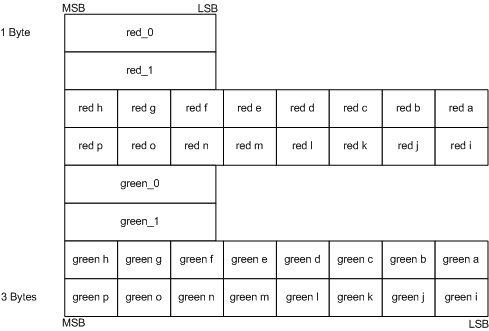

Block compression is a texture compression technique for reducing texture size. When compared to a texture with 32-bits per color, a block-compressed texture can be up to 75 percent smaller. Applications usually see a performance increase when using block compression because of the smaller memory footprint.
While lossy, block compression works well and is recommended for all textures that get transformed and filtered by the pipeline. Textures that are directly mapped to the screen (UI elements like icons and text) are not good choices for compression because artifacts are more noticeable.
A block-compressed texture must be created as a multiple of size 4 in all dimensions and cannot be used as an output of the pipeline.
Block compression is a technique for reducing the amount of memory required to store color data. By storing some colors in their original size, and other colors using an encoding scheme, you can dramatically reduce the amount of memory required to store the image. Since the hardware automatically decodes compressed data, there is no performance penalty for using compressed textures.
To see how compression works, look at the following two examples. The first example describes the amount of memory used when storing uncompressed data; the second example describes the amount of memory used when storing compressed data.
The following illustration represents an uncompressed 4×4 texture. Assume that each color contains a single color component (red for instance) and is stored in one byte of memory.
The uncompressed data is laid out in memory sequentially and requires 16 bytes, as shown in the following illustration.
Now that you've seen how much memory an uncompressed image uses, take a look at how much memory a compressed image saves. The BC4 compression format stores 2 colors (1 byte each) and 16 3-bit indices (48 bits, or 6 bytes) that are used to interpolate the original colors in the texture, as shown in the following illustration.
The total space required to store the compressed data is 8 bytes which is a 50-percent memory savings over the uncompressed example. The savings are even larger when more than one color component is used.
The substantial memory savings provided by block compression can lead to an increase in performance. This performance comes at the cost of image quality (due to color interpolation); however, the lower quality is often not noticeable.
The next section shows you how Direct3D 10 makes it easy for you to use block compression in your application.
Create a block-compressed texture just like an uncompressed texture (see Create a Texture from a File) except that you specify a block-compressed format.
loadInfo.Format = DXGI_FORMAT_BC1_UNORM;
D3DX10CreateTextureFromFile(...);
Next, create a view to bind the texture to the pipeline. Since a block-compressed texture can be used only as an input to a shader-stage, you want to create a shader-resource view by calling CreateShaderResourceView.
Use a block compressed texture the same way you would use an uncompressed texture. If your application will get a memory pointer to block-compressed data, you need to account for the memory padding in a mipmap that causes the declared size to differ from the actual size.
If you have application code that uses a memory pointer to walk the memory of a block compressed texture, there is one important consideration that may require a modification in your application code. A block-compressed texture must be a multiple of 4 in all dimensions because the block-compression algorithms operate on 4x4 texel blocks. This will be a problem for a mipmap whose initial dimensions are divisible by 4, but subdivided levels are not. The following diagram shows the difference in area between the virtual (declared) size and the physical (actual) size of each mipmap level.
The left side of the diagram shows the mipmap level sizes that are generated for an uncompressed 60×40 texture. The top level size is taken from the API call that generates the texture; each subsequent level is half the size of the previous level. For an uncompressed texture, there is no difference between the virtual (declared) size and the physical (actual) size.
The right side of the diagram shows the mipmap level sizes that are generated for the same 60×40 texture with compression. Notice that both the second and third levels have memory padding to make the sizes factors of 4 on every level. This is necessary so that the algorithms can operate on 4×4 texel blocks. This is expecially evident if you consider mipmap levels that are smaller than 4×4; the size of these very small mipmap levels will be rounded up to the nearest factor of 4 when texture memory is allocated.
Sampling hardware uses the virtual size; when the texture is sampled, the memory padding is ignored. For mipmap levels that are smaller than 4×4, only the first four texels will be used for a 2×2 map, and only the first texel will be used by a 1×1 block. However, there is no API structure that exposes the physical size (including the memory padding).
In summary, be careful to use aligned memory blocks when copying regions that contain block-compressed data. To do this in an application that gets a memory pointer, make sure that the pointer uses the surface pitch to account for the physical memory size.
Block compression techniques in Direct3D break up uncompressed texture data into 4×4 blocks, compress each block, and then store the data. For this reason, textures that are expected to be compressed must have texture dimensions that are multiples of 4.
The preceding diagram shows a texture partitioned into texel blocks. The first block shows the layout of the 16 texels labeled a-p, but every block has the same organization of data.
Direct3D implements several compression schemes, each implements a different tradeoff between number of components stored, the number of bits per component, and the amount of memory consumed. Use this table to help choose the format that works best with the type of data and the data resolution that best fits your application.
| Source Data | Data Compression Resolution (in bits) | Choose this compression format |
|---|---|---|
| Three-component color and alpha | Color (5:6:5), Alpha (1) or no alpha | BC1 |
| Three-component color and alpha | Color (5:6:5), Alpha (4) | BC2 |
| Three-component color and alpha | Color (5:6:5), Alpha (8) | BC3 |
| One-component color | One component (8) | BC4 |
| Two-component color | Two components (8:8) | BC5 |
Â
Use the first block compression format (BC1) (either DXGI_FORMAT_BC1_TYPELESS, DXGI_FORMAT_BC1_UNORM, or DXGI_BC1_UNORM_SRGB) to store three-component color data using a 5:6:5 color (5 bits red, 6 bits green, 5 bits blue). This is true even if the data also contains 1-bit alpha. Assuming a 4×4 texture using the largest data format possible, the BC1 format reduces the memory required from 48 bytes (16 colors × 3 components/color × 1 byte/component) to 8 bytes of memory.
The algorithm works on 4×4 blocks of texels. Instead of storing 16 colors, the algorithm saves 2 reference colors (color_0 and color_1) and 16 2-bit color indices (blocks a–p), as shown in the following diagram.
The color indices (a–p) are used to look up the original colors from a color table. The color table contains 4 colors. The first two colors—color_0 and color_1—are the minimum and maximum colors. The other two colors, color_2 and color_3, are intermediate colors calculated with linear interpolation.
color_2 = 2/3*color_0 + 1/3*color_1
color_3 = 1/3*color_0 + 2/3*color_1
The four colors are assigned 2-bit index values that will be saved in blocks a–p.
color_0 = 00
color_1 = 01
color_2 = 10
color_3 = 11
Finally, each of the colors in blocks a–p are compared with the four colors in the color table, and the index for the closest color is stored in the 2-bit blocks.
This algorithm lends itself to data that contains 1-bit alpha also. The only difference is that color_3 is set to 0 (which represents a transparent color) and color_2 is a linear blend of color_0 and color_1.
color_2 = 1/2*color_0 + 1/2*color_1;
color_3 = 0;
Differences between Direct3D 9 and Direct3D 10:
This format exists in both Direct3D 9 and 10.
Use the BC2 format (either DXGI_FORMAT_BC2_TYPELESS, DXGI_FORMAT_BC2_UNORM, or DXGI_BC2_UNORM_SRGB) to store data that contains color and alpha data with low coherency (use BC3 for highly-coherent alpha data). The BC2 format stores RGB data as a 5:6:5 color (5 bits red, 6 bits green, 5 bits blue) and alpha as a separate 4-bit value. Assuming a 4×4 texture using the largest data format possible, this compression technique reduces the memory required from 64 bytes (16 colors × 4 components/color × 1 byte/component) to 16 bytes of memory.
The BC2 format stores colors with the same number of bits and data layout as the BC1 format; however, BC2 requires an additional 64-bits of memory to store the alpha data, as shown in the following diagram.
Differences between Direct3D 9 and Direct3D 10:
This format exists in both Direct3D 9 and 10.
In Direct3D 9, the BC2 format is called D3DFMT_DXT2 and D3DFMT_DXT3.
In Direct3D 10, the BC2 format is represented by DXGI_FORMAT_BC2_UNORM or DXGI_FORMAT_BC2_UNORM_SRGB
Use the BC3 format (either DXGI_FORMAT_BC3_TYPELESS, DXGI_FORMAT_BC3_UNORM, or DXGI_BC3_UNORM_SRGB) to store highly coherent color data (use BC2 with less coherent alpha data). The BC3 format stores color data using 5:6:5 color (5 bits red, 6 bits green, 5 bits blue) and alpha data using one byte. Assuming a 4×4 texture using the largest data format possible, this compression technique reduces the memory required from 64 bytes (16 colors × 4 components/color × 1 byte/component) to 16 bytes of memory.
The BC3 format stores colors with the same number of bits and data layout as the BC1 format; however, BC3 requires an additional 64-bits of memory to store the alpha data. The BC3 format handles alpha by storing two reference values and interpolating between them (similarly to how BC1 stores RGB color).
The algorithm works on 4×4 blocks of texels. Instead of storing 16 alpha values, the algorithm stores 2 reference alphas (alpha_0 and alpha_1) and 16 3-bit color indices (alpha a through p), as shown in the following diagram.
The BC3 format uses the alpha indices (a–p) to look up the original colors from a lookup table that contains 8 values. The first two values—alpha_0 and alpha_1—are the minimum and maximum values; the other six intermediate values are calculated using linear interpolation.
The algorithm determines the number of interpolated alpha values by examining the two reference alpha values. If alpha_0 is greater than alpha_1, then BC3 interpolates 6 alpha values; otherwise, it interpolates 4. When BC3 interpolates only 4 alpha values, it sets two additional alpha values (0 for fully transparent and 255 for fully opaque). BC3 compresses the alpha values in the 4×4 texel area by storing the bit code corresponding to the interpolated alpha values which most closely matches the original alpha for a given texel.
if( alpha_0 > alpha_1 )
{
// 6 interpolated alpha values.
alpha_2 = 6/7*alpha_0 + 1/7*alpha_1; // bit code 010
alpha_3 = 5/7*alpha_0 + 2/7*alpha_1; // bit code 011
alpha_4 = 4/7*alpha_0 + 3/7*alpha_1; // bit code 100
alpha_5 = 3/7*alpha_0 + 4/7*alpha_1; // bit code 101
alpha_6 = 2/7*alpha_0 + 5/7*alpha_1; // bit code 110
alpha_7 = 1/7*alpha_0 + 6/7*alpha_1; // bit code 111
}
else
{
// 4 interpolated alpha values.
alpha_2 = 4/5*alpha_0 + 1/5*alpha_1; // bit code 010
alpha_3 = 3/5*alpha_0 + 2/5*alpha_1; // bit code 011
alpha_4 = 2/5*alpha_0 + 3/5*alpha_1; // bit code 100
alpha_5 = 1/5*alpha_0 + 4/5*alpha_1; // bit code 101
alpha_6 = 0; // bit code 110
alpha_7 = 255; // bit code 111
}
Differences between Direct3D 9 and Direct3D 10:
In Direct3D 9, the BC3 format is called D3DFMT_DXT4 and D3DFMT_DXT5.
In Direct3D 10, the BC3 format is represented by DXGI_FORMAT_BC3_UNORM or DXGI_FORMAT_BC3_UNORM_SRGB.
Use the BC4 format to store one-component color data using 8 bits for each color. As a result of the increased accuracy (compared to BC1), BC4 is ideal for storing floating-point data in the range of [0 to 1] using the DXGI_FORMAT_BC4_UNORM format and [-1 to +1] using the DXGI_FORMAT_BC4_SNORM format. Assuming a 4×4 texture using the largest data format possible, this compression technique reduces the memory required from 16 bytes (16 colors × 1 components/color × 1 byte/component) to 8 bytes.
The algorithm works on 4×4 blocks of texels. Instead of storing 16 colors, the algorithm stores 2 reference colors (red_0 and red_1) and 16 3-bit color indices (red a through red p), as shown in the following diagram.
The algorithm uses the 3-bit indices to look up colors from a color table that contains 8 colors. The first two colors—red_0 and red_1—are the minimum and maximum colors. The algorithm calculates the remaining colors using linear interpolation.
The algorithm determines the number of interpolated color values by examining the two reference values. If red_0 is greater than red_1, then BC4 interpolates 6 color values; otherwise, it interpolates 4. When BC4 interpolates only 4 color values, it sets two additional color values (0.0f for fully transparent and 1.0f for fully opaque). BC4 compresses the alpha values in the 4×4 texel area by storing the bit code corresponding to the interpolated alpha values that most closely matches the original alpha for a given texel.
The interpolation of the single-component data is done as in the following code sample.
unsigned word red_0, red_1;
if( red_0 > red_1 )
{
// 6 interpolated color values
red_2 = (6*red_0 + 1*red_1)/7.0f; // bit code 010
red_3 = (5*red_0 + 2*red_1)/7.0f; // bit code 011
red_4 = (4*red_0 + 3*red_1)/7.0f; // bit code 100
red_5 = (3*red_0 + 4*red_1)/7.0f; // bit code 101
red_6 = (2*red_0 + 5*red_1)/7.0f; // bit code 110
red_7 = (1*red_0 + 6*red_1)/7.0f; // bit code 111
}
else
{
// 4 interpolated color values
red_2 = (4*red_0 + 1*red_1)/5.0f; // bit code 010
red_3 = (3*red_0 + 2*red_1)/5.0f; // bit code 011
red_4 = (2*red_0 + 3*red_1)/5.0f; // bit code 100
red_5 = (1*red_0 + 4*red_1)/5.0f; // bit code 101
red_6 = 0.0f; // bit code 110
red_7 = 1.0f; // bit code 111
}
The reference colors are assigned 3-bit indices (000–111 since there are 8 values), which will be saved in blocks red a through red p during compression.
The DXGI_FORMAT_BC4_SNORM is exactly the same, except that the data is encoded in SNORM range and when 4 color values are interpolated. The interpolation of the single-component data is done as in the following code sample.
signed word red_0, red_1;
if( red_0 > red_1 )
{
// 6 interpolated color values
red_2 = (6*red_0 + 1*red_1)/7.0f; // bit code 010
red_3 = (5*red_0 + 2*red_1)/7.0f; // bit code 011
red_4 = (4*red_0 + 3*red_1)/7.0f; // bit code 100
red_5 = (3*red_0 + 4*red_1)/7.0f; // bit code 101
red_6 = (2*red_0 + 5*red_1)/7.0f; // bit code 110
red_7 = (1*red_0 + 6*red_1)/7.0f; // bit code 111
}
else
{
// 4 interpolated color values
red_2 = (4*red_0 + 1*red_1)/5.0f; // bit code 010
red_3 = (3*red_0 + 2*red_1)/5.0f; // bit code 011
red_4 = (2*red_0 + 3*red_1)/5.0f; // bit code 100
red_5 = (1*red_0 + 4*red_1)/5.0f; // bit code 101
red_6 = -1.0f; // bit code 110
red_7 = 1.0f; // bit code 111
}
The reference colors are assigned 3-bit indices (000–111 since there are 8 values), which will be saved in blocks red a through red p during compression.
Use the BC5 format to store two-component color data using 8 bits for each color. As a result of the increased accuracy (compared to BC1), BC5 is ideal for storing floating-point data in the range of [0 to 1] using the DXGI_FORMAT_BC5_UNORM format and [-1 to +1] using the DXGI_FORMAT_BC5_SNORM format. Assuming a 4×4 texture using the largest data format possible, this compression technique reduces the memory required from 32 bytes (16 colors × 2 components/color × 1 byte/component) to 16 bytes.
The algorithm works on 4×4 blocks of texels. Instead of storing 16 colors for both components, the algorithm stores 2 reference colors for each component (red_0, red_1, green_0, and green_1) and 16 3-bit color indices for each component (red a through red p and green a through green p), as shown in the following diagram.

The algorithm uses the 3-bit indices to look up colors from a color table that contains 8 colors. The first two colors—red_0 and red_1 (or green_0 and green_1)—are the minimum and maximum colors. The algorithm calculates the remaining colors using linear interpolation.
The algorithm determines the number of interpolated color values by examining the two reference values. If red_0 is greater than red_1, then BC5 interpolates 6 color values; otherwise, it interpolates 4. When BC5 interpolates only 4 color values, it sets the remaining two color values at 0.0f and 1.0f.
The interpolation of the single-component data is done as in the following code sample. The calculations for the green components are similar.
unsigned word red_0, red_1;
if( red_0 > red_1 )
{
// 6 interpolated color values
red_2 = (6*red_0 + 1*red_1)/7.0f; // bit code 010
red_3 = (5*red_0 + 2*red_1)/7.0f; // bit code 011
red_4 = (4*red_0 + 3*red_1)/7.0f; // bit code 100
red_5 = (3*red_0 + 4*red_1)/7.0f; // bit code 101
red_6 = (2*red_0 + 5*red_1)/7.0f; // bit code 110
red_7 = (1*red_0 + 6*red_1)/7.0f; // bit code 111
}
else
{
// 4 interpolated color values
red_2 = (4*red_0 + 1*red_1)/5.0f; // bit code 010
red_3 = (3*red_0 + 2*red_1)/5.0f; // bit code 011
red_4 = (2*red_0 + 3*red_1)/5.0f; // bit code 100
red_5 = (1*red_0 + 4*red_1)/5.0f; // bit code 101
red_6 = 0.0f; // bit code 110
red_7 = 1.0f; // bit code 111
}
The reference colors are assigned 3-bit indices (000–111 since there are 8 values), which will be saved in blocks red a through red p during compression.
The DXGI_FORMAT_BC5_SNORM is exactly the same, except that the data is encoded in SNORM range and when 4 data values are interpolated, the two additional values are -1.0f and 1.0f. The interpolation of the single-component data is done as in the following code sample. The calculations for the green components are similar.
signed word red_0, red_1;
if( red_0 > red_1 )
{
// 6 interpolated color values
red_2 = (6*red_0 + 1*red_1)/7.0f; // bit code 010
red_3 = (5*red_0 + 2*red_1)/7.0f; // bit code 011
red_4 = (4*red_0 + 3*red_1)/7.0f; // bit code 100
red_5 = (3*red_0 + 4*red_1)/7.0f; // bit code 101
red_6 = (2*red_0 + 5*red_1)/7.0f; // bit code 110
red_7 = (1*red_0 + 6*red_1)/7.0f; // bit code 111
}
else
{
// 4 interpolated color values
red_2 = (4*red_0 + 1*red_1)/5.0f; // bit code 010
red_3 = (3*red_0 + 2*red_1)/5.0f; // bit code 011
red_4 = (2*red_0 + 3*red_1)/5.0f; // bit code 100
red_5 = (1*red_0 + 4*red_1)/5.0f; // bit code 101
red_6 = -1.0f; // bit code 110
red_7 = 1.0f; // bit code 111
}
The reference colors are assigned 3-bit indices (000–111 since there are 8 values), which will be saved in blocks red a through red p during compression.
Direct3D 10.1 enables copies between prestructured-typed textures and block-compressed textures of the same bit widths. The functions that can accomplish this are CopyResource and CopySubresourceRegion.
Beginning with Direct3D 10.1, you can use CopyResource and CopySubresourceRegion to copy between a few format types. This type of copy operation performs a type of format conversion that reinterprets resource data as a different format type. Consider this example that shows the difference between reinterpreting data with the way a more typical type of conversion behaves:
FLOAT32 f = 1.0f;
UINT32 u;
To reinterpret ‘f’ as the type of ‘u’, use memcpy:
memcpy( &u, &f, sizeof( f ) ); // ‘u’ becomes equal to 0x3F800000.
In the preceding reinterpretation, the underlying value of the data doesn’t change; memcpy reinterprets the float as an unsigned integer.
To perform the more typical type of conversion, use assignment:
u = f; // ‘u’ becomes 1.
In the preceding conversion, the underlying value of the data changes.
The following table lists the allowable source and destination formats that you can use in this reinterpretation type of format conversion. You must encode the values properly for the reinterpretation to work as expected.
| Bit Width | Uncompressed Resource | Block-Compressed Resource |
|---|---|---|
| 32 | DXGI_FORMAT_R32_UINT DXGI_FORMAT_R32_SINT | DXGI_FORMAT_R9G9B9E5_SHAREDEXP |
| 64 | DXGI_FORMAT_R16G16B16A16_UINT DXGI_FORMAT_R16G16B16A16_SINT DXGI_FORMAT_R32G32_UINT DXGI_FORMAT_R32G32_SINT | DXGI_FORMAT_BC1_UNORM[_SRGB] DXGI_FORMAT_BC4_UNORM DXGI_FORMAT_BC4_SNORM |
| 128 | DXGI_FORMAT_R32G32B32A32_UINT DXGI_FORMAT_R32G32B32A32_SINT | DXGI_FORMAT_BC2_UNORM[_SRGB] DXGI_FORMAT_BC3_UNORM[_SRGB] DXGI_FORMAT_BC5_UNORM DXGI_FORMAT_BC5_SNORM |
Â
Â
Â